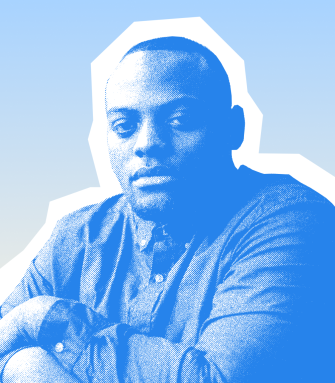

Everything you need to measure, model, and act on sustainability

Track
Emissions, energy, and waste across your value chain
Model
Forecast performance and goal alignment
Report
Generate ESG disclosures, automate frameworks
Act
Surface insights and operational next steps
Built for clarity
Designed for action
Clarity drives action
We believe better decisions start with better data—measured, visible, and trusted.

Sustainability is a systems problem
We build tools that help teams connect the dots between operations, impact, and accountability.
Progress over perfection
We support real-world momentum—helping organizations move from ambition to measurable change.

Why Acme Inc chose Aetherfield
With fragmented data and growing reporting pressure, Acme turned to Aetherfield to streamline their ESG workflows. The result? Faster decisions, fewer spreadsheets, and 34% more coverage.
From the journal

How to Build a Climate-Ready Data Stack
Insights · 4 min

Sustainability Isn’t a Side Project: Making Impact Operational
Strategy · 7 min

Inside the Aetherfield Model: How We Turn Data Into Action
Insights · 5 min
